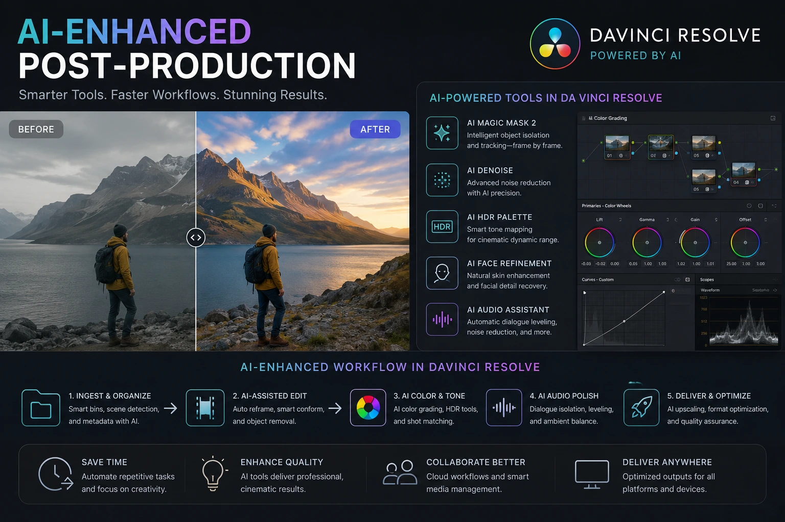
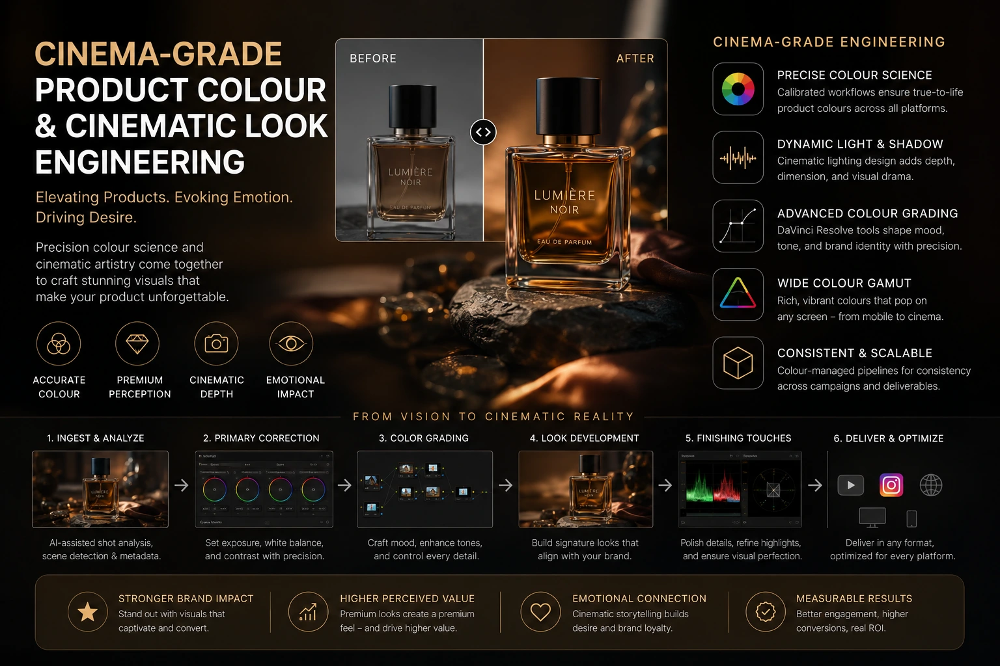

How AI-Driven Neural Grading Preserves Realistic Skin Tones in Commercial Ads
The Skin Tone Problem in Indian Commercial Colour Grading
Colour grading, as a professional discipline, was developed and standardised primarily in the context of Hollywood cinema and Western advertising production — calibrated against the skin tone range, the lighting conditions, and the aesthetic conventions of an industry that was producing content primarily for and with Northern European subjects. The professional tools, the LUT libraries, the reference monitors, the colourist training programmes, and the aesthetic vocabulary of commercial colour grading all carry this calibration as a default.
The result, applied to Indian commercial advertising, is a specific and persistent problem: colour grades that render Northern European skin tones accurately and beautifully systematically distort South Asian skin tones — pushing them toward orange in pursuit of warmth, toward flat desaturation in pursuit of a "clean" look, or toward an artificial coolness that makes subjects look unnatural in ways that their Indian audience immediately and viscerally recognises.
For Indian brands investing in advanced commercial colour grading for their advertising — brands whose audience sees the faces of people who look like them in every ad and makes an immediate, subconscious assessment of whether those faces look right — this calibration problem is a commercial problem. An ad in which the skin tones look wrong communicates something about the brand's production quality and cultural attentiveness that no product claim can override.
AI-driven neural grading, flawless skin tone grading workflows, and the systematic application of South Asian skin tone calibration in DaVinci Resolve workflows are the tools that address this problem — producing commercial advertising that presents Indian subjects with the visual accuracy and beauty their skin tones deserve.
Understanding South Asian Skin Tone Colour Science
Effective flawless skin tone grading for Indian commercial advertising begins with understanding the specific colour science of South Asian skin tones — the specific hue, saturation, and luminance characteristics that define the range and distinguish it from the demographic that most colour grading tools default to.
The key characteristics of South Asian skin tone colour science:
- Hue range: warm golden to warm bronze, with a specific red-orange undertone. South Asian skin tones occupy a specific hue range within the skin tone band — characterised by a warm, golden-to-bronze quality that is distinct from the pink-to-peach quality of many Northern European skin tones. The undertone is typically warmer and more orange-adjacent than the cooler, pinker undertones of lighter complexions — which means that grade adjustments designed to "warm up" lighter skin tones frequently push South Asian tones too far into the orange zone rather than enhancing the natural warmth that is already present.
- Saturation range: moderate to high natural saturation, with significant depth variation. South Asian skin tones have a naturally higher colour saturation than many lighter complexions — and the range of saturation across the full South Asian skin tone spectrum (from fair to very deep) is significantly wider than the saturation range within a lighter skin tone demographic. A saturation adjustment calibrated for lighter complexions will over-saturate lighter South Asian tones and under-saturate deeper ones, producing inconsistent results within the same scene.
- Luminance range: lower reflectance in deeper tones requiring specific shadow and midtone treatment. Deeper South Asian skin tones have lower overall light reflectance than lighter complexions, which means they absorb more light and reflect less — producing lower luminance values in the shadow and midtone areas of the skin. A contrast grade that produces beautiful separation between highlights and shadows on a lighter complexion will crush the shadow detail on a deeper South Asian complexion, losing the texture and character of the skin in the darker areas.
- Highlight behaviour: warm specular highlights that must be preserved rather than neutralised. The specular highlights on South Asian skin — the points of highest light reflectance on the forehead, cheekbones, and nose — have a specific warm, golden character that communicates the vitality and health of the complexion. A highlight rolloff that neutralises or cools these specular highlights in pursuit of technical accuracy destroys the luminous quality of South Asian skin that is one of its most visually compelling characteristics.
Cultural Accuracy as Commercial Standard
Indian audiences have a sophisticated, immediate response to skin tone accuracy in commercial advertising — decades of exposure to ads featuring over-lightened, over-orange, or otherwise distorted South Asian skin tones have produced a generation of viewers who recognise the difference between accurate and inaccurate representation. Accurate skin tone grading is a brand quality signal.
Product Colour Integrity
In fashion, beauty, and jewellery advertising, the product's colour appearance against the model's skin is a critical communication element. A model's skin tone that has been pushed orange distorts the apparent colour of the clothing, jewellery, or cosmetics photographed against it — undermining the product colour accuracy that drives purchase decisions.
Diversity Within the Frame
Indian commercial productions frequently feature subjects across a wide range of South Asian complexions — from very fair to very deep — within the same scene or the same commercial. A grade that works for the lighter complexions in the frame must also work for the deeper ones, requiring a grading approach that calibrates across the full South Asian range rather than optimising for any single point within it.
Consistent Brand Visual Identity
A brand whose skin tone grading is consistent across all its commercial productions — the same warmth, the same luminance quality, the same saturation treatment, applied to subjects across the full South Asian skin tone range — builds a recognisable visual identity that communicates professional standards and cultural intelligence simultaneously.

AI-Enhanced Video Post-Production: The Neural Grading Tools
AI-enhanced video post-production for skin tone grading applies machine learning models to the specific technical challenges that manual skin tone isolation and correction face at scale — the need for frame-accurate subject tracking across motion, the need for consistent tone adjustments across different lighting conditions within the same scene, and the need to separate the skin tone region from adjacent colour ranges (warm fabrics, background elements, and prop colours that share hue values with skin tones) with precision that traditional qualifier tools cannot achieve in complex lighting environments.
The specific AI tools within DaVinci Resolve that are most directly applicable to skin tone grading in Indian commercial production:
- Magic Mask with the neural engine. DaVinci Resolve's Magic Mask uses the neural engine to identify and track a specific subject or region — including the skin of a specific person in the frame — across the full duration of a shot without requiring manual rotoscoping or traditional qualifier selection. For skin tone grading, this means the colourist can apply specific skin tone adjustments to a single subject in a shot with multiple people, without those adjustments affecting the other people in the frame. This is critical for Indian commercial productions where subjects with different complexions appear in the same shot and each requires individually calibrated skin tone treatment.
- Facial recognition and automatic grade targeting. DaVinci Resolve's facial recognition tool automatically identifies faces in the footage and creates trackable masks for each identified face — allowing the colourist to target specific grade adjustments to specific faces without manual mask drawing. For productions featuring multiple subjects, this tool reduces the skin tone correction workflow from a frame-by-frame manual process to an AI-assisted automatic tracking process that the colourist then refines rather than builds from scratch.
- Colour Warper for hue-selective skin tone adjustments. The Colour Warper in DaVinci Resolve provides a two-dimensional grid of hue and saturation adjustment controls that allows extremely precise targeting of specific skin tone hue-saturation combinations — adjusting the specific orange-skin-tone range that South Asian complexions occupy without affecting the adjacent hue ranges (warm fabrics, background warm tones) that would be caught by a less precise adjustment tool. This precision is the specific tool that enables the selective skin tone correction that flawless skin tone grading requires for the South Asian complexion range.
- AI noise reduction for deep skin tone shadow recovery. Deeper South Asian skin tones in challenging lighting conditions — indoor mixed light, low-light evening or night shoots, high-contrast outdoor lighting — frequently show increased noise in the shadow and midtone areas of the skin, because the lower reflectance of deeper complexions produces lower signal values in these areas. DaVinci Resolve's AI-powered noise reduction (powered by the neural engine) specifically identifies fine skin detail versus noise — preserving the natural texture of deeper complexions while reducing the luminance noise that standard noise reduction treats identically to skin texture.
DaVinci Resolve Workflows for South Asian Skin Tone Grading
The systematic DaVinci Resolve workflow for South Asian skin tone grading in Indian commercial advertising follows a structured pipeline that separates the technical correction, the skin tone calibration, and the creative grade into distinct, ordered stages:
- Stage 1: Camera colour space conversion and technical grade. Convert the camera's log footage (S-Log3, Log-C, BRAW, or equivalent) to a scene-linear colour space using the camera manufacturer's official IDT (Input Device Transform) in ACES, or to DaVinci Wide Gamut using the camera-specific transform. This technical conversion is the foundation that all subsequent grades are built on — and using the camera manufacturer's official transform rather than a generic log conversion ensures that the colour science of the original capture is preserved accurately into the grading environment.
- Stage 2: White balance normalisation. Correct for any white balance variation between shots — particularly important in mixed lighting environments where different shots in the same scene were captured under different colour temperature combinations. Use a ColourChecker or grey card reference if one was shot, or the parametric colour correction approach using known neutral reference points in the scene (white paper, white clothing, neutral grey surfaces). White balance normalisation before skin tone grading ensures that the skin tone correction is addressing the skin tone's actual colour rather than the skin tone's colour plus an uncorrected white balance error.
- Stage 3: Skin tone isolation and primary correction using the Colour Warper. Using a qualifier or the Magic Mask to isolate the skin tone region, apply a targeted correction using the Colour Warper to bring the skin tone hue to the correct position within the South Asian skin tone reference range. The South Asian skin tone hue should sit in the orange-yellow range of the vectorscope skin tone line — slightly warmer than the Northern European default but not pushed into the full orange that indicates miscalibration. Adjust saturation to match the natural saturation level of the subject's specific complexion depth, and adjust luminance to open the shadow areas in deeper complexions without over-brightening the natural depth of the skin.
- Stage 4: Highlight rolloff calibration for warm specular highlight preservation. Apply a gentle, warm-biased highlight rolloff using the log wheels or the custom curves tool — ensuring that the specular highlights on the skin retain their warm, golden quality rather than rolling off to neutral white. A parametric curve that begins rolling off at around 80% luminance and maintains a slight warm bias through the rolloff produces the luminous highlight quality that characterises well-graded South Asian skin.
- Stage 5: Shadow detail preservation in deeper complexions. For subjects with deeper complexions, apply a targeted luminance lift in the skin tone shadow region — using the qualifier or Magic Mask to isolate the skin and applying a low-luminance lift specifically to the skin region without affecting the background or non-skin elements. This opens the shadow detail that distinguishes the three-dimensional depth and texture of deep South Asian skin from flat, crushed shadow rendering.
- Stage 6: Multi-subject calibration for shots with multiple complexions. For shots featuring subjects with different complexion depths, apply separate skin tone grades to each subject using the facial recognition tool or individual Magic Mask instances — ensuring each complexion is calibrated to its own natural reference point rather than receiving a single averaged correction. The additional post-production time this requires is the investment that produces the consistent, accurate skin tone rendering across the full South Asian complexion range that the Indian audience recognises as quality.
Matching Camera Colour Spaces: The Technical Foundation
Matching camera colour spaces is the technical prerequisite for consistent skin tone grading across a commercial production shot on multiple cameras — a common reality in Indian commercial production where budget, availability, and specific shooting requirements may result in footage captured on different camera systems in the same production.
The camera matching workflow for multi-camera commercial productions:
- Reference chart capture at the start of each shooting day. A calibration chart — a ColourChecker Passport or X-Rite ColorChecker — is photographed or recorded on every camera at the start of each shooting day, in the primary lighting setup of that day. These reference captures are the foundation for camera matching in post — the colourist uses the reference chart values to build camera-specific colour transforms that bring each camera's rendering to a common baseline.
- ACES or DaVinci Wide Gamut as the common colour space. Using a standardised, wide-gamut colour space as the common grading environment — rather than grading each camera's footage in its native log space — provides a consistent framework for matching across cameras. ACES (Academy Colour Encoding System) is the industry standard for this purpose; DaVinci Wide Gamut is Blackmagic's proprietary equivalent that is optimised for the DaVinci Resolve workflow.
- Skin tone as the primary match reference. When matching footage across cameras, the skin tone of a specific subject who appears on all cameras is the most reliable and most commercially important match reference — because the skin tone is the element the viewer will most immediately recognise as inconsistent if the cameras are not well-matched. Match the skin tone vectorscope position, the skin tone luminance value, and the skin tone saturation level across all cameras before applying any creative grade.
Luxury Brand Colour Science: Cinema-Grade Product Colour
Luxury brand colour science and cinema-grade product colour apply the advanced colour grading methodology to the specific visual challenges of luxury and premium brand commercial production — where the product's colour accuracy and material rendering are as commercially critical as the skin tone accuracy of the model.
The specific cinema-grade product colour applications for Indian luxury and premium brands:
Textile and Fashion
- Kanjivaram silk reds must render with the specific depth and warmth of genuine silk dye — not the flat, slightly orange rendering of standard correction
- Zari gold must catch light with the specific warm brilliance that distinguishes handwoven from machine-produced embellishment
- Indigo and deep jewel tones must retain saturation in deep shadow areas — a common failure point in standard correction that kills the richness of deep-dyed Indian textiles
- White and cream fabrics must render with warmth appropriate to the fabric's natural character rather than being neutralised to clinical white
Jewellery and Metalwork
- 22-carat gold must render with the specific warm, rich yellow that distinguishes it from 18-carat or gold-plated alternatives — a warmth that is easily lost in standard correction
- Diamond and gemstone brilliance must be preserved through the highlight rolloff without clipping to neutral white — maintaining the colour character of coloured stones
- Polished silver and white gold must render with a cool, precise luminance that communicates precious metal quality rather than generic metallic appearance
- Antique and temple jewellery finishes must render with the specific warmth and depth of aged metal rather than the uniform brightness of new polished pieces
Food and Beverage
- Turmeric yellow must render with the specific warm, vivid saturation that communicates fresh spice rather than dried powder
- Tamarind and chilli-based sauces require specific red-to-orange colour treatment that communicates heat and appetite appeal without looking artificial
- Filter coffee and chai must render with the specific warm brown character that communicates the depth of the brew — a rendering that is frequently neutralised by standard correction into a flat, unappetising brown
- Fresh produce — mangoes, tomatoes, greens — must render with the saturation and luminance that communicate freshness rather than the slightly muted rendering of standard correction

Cinematic Look Engineering: Building the Brand's Visual Identity in Colour
Cinematic look engineering is the creative stage of advanced commercial colour grading that transforms technically accurate footage into a distinct, recognisable visual identity — the specific colour treatment that makes a brand's commercial content immediately recognisable as belonging to that brand across every piece of content it produces.
The components of cinematic look engineering for Indian commercial brands:
- Brand LUT development. A custom LUT (Look Up Table) developed specifically for the brand's visual identity — encoding the specific colour treatment, contrast character, saturation level, and tonal quality that defines the brand's look — provides a consistent starting point for every grade produced by every colourist working on the brand's content. A brand LUT developed around the South Asian skin tone range specific to the brand's casting ensures that the brand's look enhances rather than distorts the skin tones of the subjects who represent the brand.
- Shadow density and colour character. The shadows in a brand's commercial content communicate more about its aesthetic positioning than any other tonal region — because shadow rendering is where the most significant difference between premium and standard colour grading is visible. A brand positioned in the premium segment uses rich, warm shadow character with preserved detail; a brand positioned in the contemporary clean segment uses cooler, more neutral shadows with less density; a brand positioned in the heritage or traditional segment uses warm, amber-tinged shadows that communicate depth and time. The shadow treatment is the most immediate visual signal of a brand's aesthetic positioning.
- Highlight quality and warmth character. The highlight rolloff — the way the image transitions from the midtones into the brightest areas — defines the image's overall luminance quality. A warm, gentle rolloff communicates richness and intimacy; a cool, precise rolloff communicates modernity and precision; an extended, filmic rolloff communicates the organic quality of traditional film photography. The highlight character should be chosen in relation to the brand's positioning and maintained consistently across all content.
- Skin tone warmth as a brand constant. Defining a specific skin tone warmth level — a specific degree of warmth in the golden-orange range that is consistently applied to the brand's subjects across all content — creates a recognisable human warmth character in the brand's visual identity. This skin tone warmth constant should be calibrated to render the specific South Asian skin tones of the brand's typical casting accurately and beautifully, and applied consistently enough that it becomes a recognisable characteristic of the brand's visual look.
Conclusion
AI-driven neural grading, systematic flawless skin tone grading workflows, DaVinci Resolve workflows calibrated for South Asian complexions, and cinema-grade product colour applied through luxury brand colour science are the advanced commercial colour grading disciplines that determine whether an Indian brand's commercial advertising presents its subjects — and its products — with the visual accuracy and beauty they deserve.
The Indian audience's response to skin tone accuracy in commercial advertising is immediate, subconscious, and commercially significant. A brand whose commercial content consistently presents Indian subjects with accurate, beautiful skin tone rendering is communicating something about its cultural intelligence, its production quality, and its respect for its audience that no headline claim can match. And a brand whose content consistently distorts or misrepresents those skin tones is communicating the opposite — regardless of the quality of the production in every other respect.
At The PhD Ads, we produce advanced commercial colour grading for Indian brands — AI-enhanced video post-production workflows in DaVinci Resolve, South Asian skin tone calibration, cinema-grade product colour, and cinematic look engineering built for brands whose commercial communication demands the visual accuracy and beauty that flawless skin tone grading produces.
Key Topics
Ready to Produce Commercial Content with Colour That Does Justice to Your Subjects?
At The PhD Ads, we produce advanced commercial colour grading for Indian brands — AI-enhanced DaVinci Resolve workflows, South Asian skin tone calibration, cinema-grade product colour, and cinematic look engineering built for brands whose visual standards demand flawless skin tone accuracy.
Email: team@e2o.in